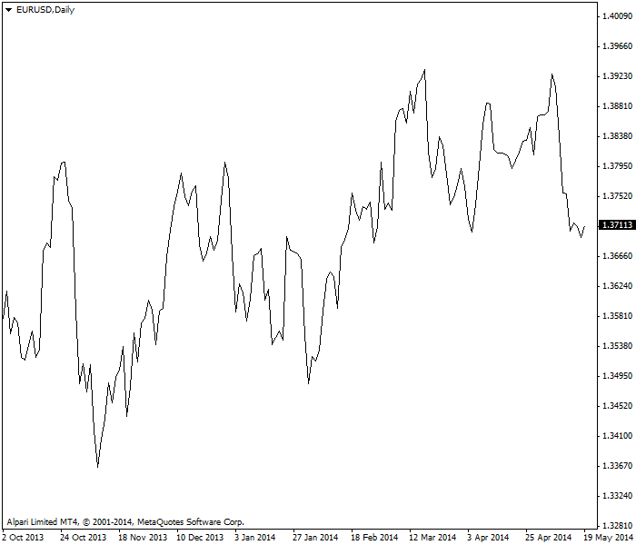
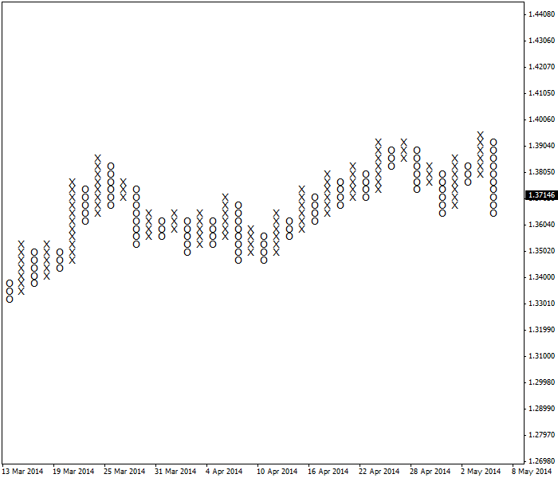

<!DOCTYPE html>
<html>
</html>
<head>
  <meta charset="utf-8">
  <meta http-equiv="X-UA-Compatible" content="IE=edge">
  <title>外汇站（fx-z.com） - 线形图</title>
  <meta name="description" content="">
  <meta name="viewport" content="width=device-width, initial-scale=1">
  <meta name="robots" content="all,follow">
  <!-- Bootstrap CSS-->
  <link rel="stylesheet" href="vendor/bootstrap/css/bootstrap.min.css">
  <!-- Font Awesome CSS-->
  <link rel="stylesheet" href="vendor/font-awesome/css/font-awesome.min.css">
  <!-- Google fonts - Roboto-->
  <link rel="stylesheet" href="https://fonts.googleapis.com/css?family=Roboto:400,300,700,400italic">
  <!-- owl carousel-->
  <link rel="stylesheet" href="vendor/owl.carousel/assets/owl.carousel.css">
  <link rel="stylesheet" href="vendor/owl.carousel/assets/owl.theme.default.css">
  <!-- theme stylesheet-->
  <link rel="stylesheet" href="css/style.default.css" id="theme-stylesheet">
  <!-- Custom stylesheet - for your changes-->
  <link rel="stylesheet" href="css/custom.css">
  <!-- Favicon-->
  <link rel="shortcut icon" href="img/favicon.png">
  <!-- Tweaks for older IEs--><!--[if lt IE 9]>
    <script src="https://oss.maxcdn.com/html5shiv/3.7.3/html5shiv.min.js"></script>
    <script src="https://oss.maxcdn.com/respond/1.4.2/respond.min.js"></script><![endif]-->
</head>
<body>
  <div id="all">
    <div class="container-fluid">
      <div class="row row-offcanvas row-offcanvas-left"> 
        <!--   *** SIDEBAR ***-->
        <div id="sidebar" class="col-md-4 col-lg-3 sidebar-offcanvas">
          <div class="sidebar-content">
            <h1 class="sidebar-heading"> <a href="https://fx-z.com">fx-z.com</a></h1>
            <p class="sidebar-p">介绍外汇相关的基本知识，告诉您如何进行自己的技术面和基本面分析，讲解先进的交易理念，并且为您阐述失败交易者与专业交易者之间的真正区别。 </p>
            <p class="sidebar-p">通过这些课程的学习，您将学会如何根据自己的优势来应用情绪分析，还将了解真实世界的事件会对货币汇率产生什么影响，央行在外汇市场中所发挥的作用，以及交易者在颇受欢迎的即期外汇交易中有哪些选择方案。 </p>
            <ul class="sidebar-menu">
                <!-- Link-->
                <li class="sidebar-item"><a href="https://fx-z.com" class="sidebar-link">首页</a></li>
                <!-- Link-->
                <li class="sidebar-item"><a href="cihui.html" class="sidebar-link">外汇词汇</a></li>
                <!-- Link-->
                <li class="sidebar-item"><a href="ebook.html" class="sidebar-link">获取外汇电子书</a></li>
            </ul>
            <p class="social"><a href="https://www.cn-forextime.com/zh?partner_id=4920383" target="_blank"data-animate-hover="pulse" class="external facebook"><i class="fa fa-eur"></i></a><a href="https://www.cn-forextime.com/zh?partner_id=4920383" target="_blank" data-animate-hover="pulse" class="external gplus"><i class="fa fa-gbp"></i></a><a href="https://www.cn-forextime.com/zh?partner_id=4920383" target="_blank" data-animate-hover="pulse" class="external twitter"><i class="fa fa-rmb"></i></a><a href="https://www.cn-forextime.com/zh?partner_id=4920383" target="_blank" title="" class="external instagram"><i class="fa fa-dollar"></i></a><a href="https://www.cn-forextime.com/zh?partner_id=4920383" target="_blank" data-animate-hover="pulse" class="email"><i class="fa fa-money"></i></a></p>
            <div class="copyright text-center text-md-left">
             
              
            </div>
          </div>
        </div>
        <!--   *** SIDEBAR END ***  -->
        <!--   *** DETAIL ***-->
        <div class="col-md-8 col-lg-9 content-column white-background">
          <div class="small-navbar d-flex d-md-none">
            <button type="button" data-toggle="offcanvas" class="btn btn-outline-primary"> <i class="fa fa-align-left mr-2"></i>菜单</button>
            <h1 class="small-navbar-heading"> <a href="https://fx-z.com/4-2.html">下一篇 </a></h1>
          </div>
          <div class="row">
            <div class="col-xl-10">
              <div class="content-column-content">
                <h1>线形图</h1>
       <p>
    有些分析师（还包括算法交易者）只使用适合公式的数字表格，但大多数技术分析师将图表作为工作区。最基本的图表用一条线将相同时间间隔（无论是每小时、每日还是其他时间周期）之间的价格连起来。通常，线形图将间隔收盘价作为前一时段最具代表性的整体交易者情绪。
</p>
<p>
    这显然更适用于当图表收盘价与重要的时间点（例如特定市场中的实际收盘价）重合时。例如在外汇期货中，芝加哥商品交易所有一个“结算”收盘价，用于清算交易者在收盘时进行的交易以及按照市值创建下一个时段的交易。由于每位交易者都知悉这一点，他们可能会试图创建一个利好其头寸的特定结算价。与之相反，交易者并不关心 10:00 收盘价与 10:05 收盘价（5 分钟间隔），或者 10 点收盘价与 11 点收盘价（每小时间隔）是否不同。换言之，作为市场情绪的一项风向标，每日收盘价比每小时收盘价更重要。
</p>
<p>
    由于即期外汇交易者 24 小时运转，因此定义开盘价/最高价/最低价/收盘价具有一定的随意性。通常，eSignal、Bloomberg 和 Reuters 等数据提供商认为外汇市场开盘于新西兰美国东部时间 18:00，收盘于纽约东部时间 17:59。因此，每日线形图使用的收盘价是纽约收盘价。
</p>
<p>
    我们的交易时段课程提供了更多关于市场何时开盘、收盘的信息。
</p>
<p>
    <strong>线形图的特点</strong>
</p>
<p>
    外汇线形图与小学科学课上学到的线形图相同。它包括两条互相垂直的轴。水平轴或 x 轴表示时间，垂直轴或 y 轴表示价格。特定时间的价格被放置于相同间隔的垂直轴上，而这些间隔通过任意两个价格之间的线条连接。
</p>
<p>
    图表上的价格被称为跳动点。跳动点这个词汇是指交易中数个不同的事件，因此明智的操作是尽量少用这个词汇，而且仅在您 100% 确定能正确运用时才使用。例如，跳动点更广泛的应用是，用它定义一项证券能够变动的最小价格变化。在即期外汇和期货外汇中，虽然这两种市场跳动值的美元价值相同，其小数点报价通常为 0.0001 或 0.00001。
</p>
<p>
    为了避免混淆，当谈到线形图上的跳动点时，大多数分析师会将其称为价格点或数据点，而不是跳动点。
</p>
<p>
    <strong>线形图的优缺点</strong>
</p>
<p>
    线形图的主要优点是简单。线形图提供了一种简单的可视化方法，可掌握一段时间内的数值变化。以下 EUR/USD 线形图将每日收盘价作为数据点。无需添加任何其他指标，即可让您立刻看到一个广泛的上行趋势。
</p>
<p>
   截止 2014 年 5 月 EUR/USD 每日汇率线形图示例
</p>
<p>
    主要优点也是主要缺点。线形图缺乏细节和细微差别。您可以一目了然地大致了解趋势，但您无法“感觉”到趋势是如何形成的。此处的线形图可能集成了数天的数据，而且这些天高点与低点之间的区间相同或几乎相同，或者高点与低点之间的区间只在数天内较宽，但在大部分天内非常窄。
</p>
<p>
    那又如何？我们通过高点与低点区间来解读交易者情绪。缺失该信息是线形图的缺点。而且，您必须停下来，然后重新查看线形中的四个回落。这些回落对于您是否能取得交易成功至关重要。
</p>
<p>
    我们也可以抱怨传统线图上均匀的数据点间距是一项缺点。例如，在点数图中，只有当前一项价格的变化显著时，您才会在图表上标记数据点，而且无需考虑 y 轴（时间）。以下点数图显示与线形图相同的数据，但是其格式强调每一列新高点（X）伴有更高的低点，而每一个回落（O）不低于最低的 X 列，但有一个例外。
</p>
<p>
    相同 EUR/USD 每日图表的点数图视图
</p>
<p>
    作为点数图规则，我们预期回落不会超过 X 上升列中的上一个最低点。这有助于设置止损位。如今，点数图基本已淡出人们的视线，或许只有极少量交易者还在使用，但它可以作为线形图的对比图表，而且说明其他形式的图表能提供更多信息。
</p>
<p>
    <br/>
</p>
<p>
    <br/>
</p>
              </div>
            </div>
          </div>
        </div>
      </div>
    </div>
  </div>
  <!-- JavaScript files-->
  <script src="vendor/jquery/jquery.min.js"></script>
  <script src="vendor/popper.js/umd/popper.min.js"> </script>
  <script src="vendor/bootstrap/js/bootstrap.min.js"></script>
  <script src="vendor/jquery.cookie/jquery.cookie.js"> </script>
  <script src="vendor/owl.carousel/owl.carousel.min.js"></script>
  <script src="vendor/masonry-layout/masonry.pkgd.min.js"></script>
  <script src="js/front.js"></script>
</body>